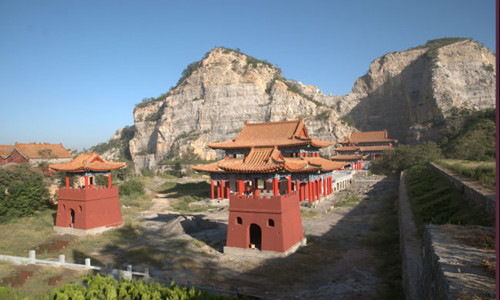
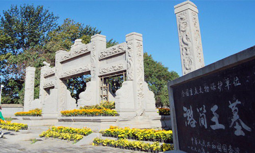

新乡简介
.jpg)
新乡市，河南省地级市，地处河南省北部、南临黄河，紧邻省会郑州，中心位于北纬35°18′，东经113°54′，南临黄河，与郑州市、开封市隔河相望；北依太行，与鹤壁市、安阳市毗邻；西连焦作市，与晋东南接壤；东接油城濮阳市与鲁西相连，总面积8249平方公里。新乡市属于华北板块，地处黄河、海河两大流域，地势北高南低，北部主要是太行山山地和丘陵岗地，南部为黄河冲积扇平原，平原占全市土地总面积的78%，属暖温带大陆性气候，历年平均气温14℃，年平均降水量573.4毫米。
新乡市建国初期为平原省省会，是豫北地区重要的中心城市 [8] ，中原地区重要的工业城市、中原经济区及中原城市群核心区城市之一，也是豫北的经济、教育、交通中心 [9] 。有中国优秀旅游城市 [10] 、中国电池工业之都 [11] 、国家知识产权示范城市、国家卫生城市 [12] 、国家园林城市、国家森林城市 [13] 、中国最佳商业城市、中国最佳生态宜居城市等多项荣誉。
新乡市历史悠久，仰韶文化、龙山文化都有遗址留存，是《诗经》重要发源地之一，流行于古代新乡地区的诗歌，占国风的四分之一。反映朝代兴衰更迭的牧野之战、张良刺秦、陈桥兵变等重大历史事件都发生在这里。境内有国家级文保单位20处，A级旅游景区19个。
历史沿革
.jpg)
新乡名称源于西汉为获嘉县的新中乡，《太平寰宇记》卷56：新乡县“取新中乡以为名”。西晋太和五年（370年）在今新乡市建新乐城。《史记志疑》：“乐者村落之谓，古字通用”，新乐亦即新乡之意。
“新中”出现在中国历史上，最早见诸《史记·楚世家》，汉高祖二年（前205年），在卫辉设汲县，属河内郡。新中是汲县的一个乡，即新中乡。汉武帝元鼎五年（前112年）夏4月，南越（今广州一带）相吕嘉谋反，汉武帝派兵前去讨伐。元鼎六年（前111年），汉武帝巡视至新中乡，得到斩获吕嘉首级的消息，改新中乡为获嘉县。隋统一全国后，于开皇六年（ 586年）划汲县、获嘉县两县组成一个新县，取原“新中乡”首尾二字为县名，“新乡”由此见诸史册。
著名景点
-
新乡凤凰山
新乡凤凰山是新乡城区范围内唯一的一座山，位于新乡北部凤泉区境内，距市中心15公里，系太行山余脉丘陵向平原过渡地带，凤泉区境内面积8.2平方公里为凤凰山核心区。2005年12月省林业厅批准建立新乡凤凰山省级森林公园，2010年5月国土资源部批准建立新乡凤凰山国家级矿山公园，2011年，凤凰山省级森林公园被国家林业局、教育部、共青团中央、中国文化生态协会授予“国家生态文明教育基地”称号。
-
潞王陵
潞王陵坐落于河南省新乡北部凤凰山下，是中国规模最大、保存最完整的一座明代藩王陵墓，也是国务院1996年公布的第四批全国重点文物保护单位。2006年12月15日，国家文物局正式宣布将潞王陵列入《中国世界文化遗产预备名录》。
潞王陵建成于万历四十三年（1615年），整个陵园由神道石刻仪仗群、潞简王墓（东墓区）、次妃赵氏娘娘庙（西墓区）三部分组成，占地共计400亩，为明会典亲王陵园规制的4倍。
-
八里沟景区

八里沟景区，位于新乡辉县上八里镇深山区，河南省新乡西北50公里处，太行山南麓，河南、山西两省交界之处，海拔在 300米至1700米落差地带，总面积42平方公里，属典型的南太行风光，是国家级4A级景区、国家地质公园、自然猕猴保护区、河南省著名风景区、2005年度河南省游客喜爱的十佳景区。